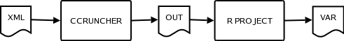

About
F.A.Q.Screenshots
Lets go work!
Download
Getting Started
Documentation
Technical DocumentInput File Reference
Development
DependenciesCode repository
SourceForge
Overview
CCruncher is a project for the simulation of massive portfolios of SME's loans where the unique risk is the default risk. It is addressed to financial institutions searching for a well-documented and efficient tool. It is designed to be integrated into the risk management systems of financial institutions for risk assessment and stress testing. The method used to determine the distribution of losses in the portfolio is the Monte Carlo algorithm, because it allows us to consider the majority of variables involved, such as the date and amount of each payment. The borrowers' default times are simulated using a copula with given survival rates and correlations.
CCruncher is designed to work in batch mode, without graphical support.
The user creates a xml file with the description of the
portfolio. CCruncher takes this file and simulates N times the portfolio.
The simulated values are stored in a csv file.
Finally, a R script takes the simulated
values and do some statistics on them to generate graphics and the risk
indicators (Expected Loss, Stddev, VaR and Expected Shortfall).

The current version is 1.5. This software is released under the GNU General Public License.
Keywords: Open Source, Credit Risk, Monte Carlo, Copula, Value at Risk, Expected Shortfall, Correlations, Survival Functions, Ratings, Transition Matrix.